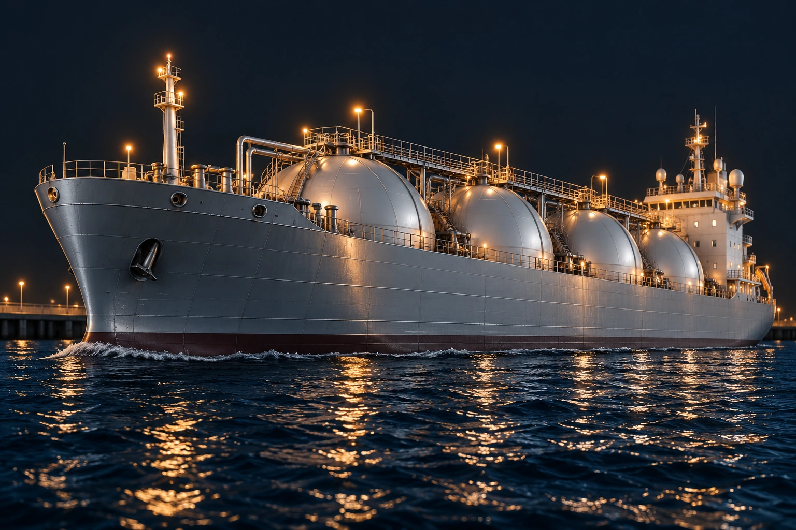

ОСПТ «Релайн» / Морская инфраструктура
Корпус судна
Борт, палуба и надстройка
Приближённый вид корпуса и конструктивных деталей судна на воде.
Рассмотреть деталиОСПТ «Релайн» / Морская инфраструктура
Стальной борт судна
Общая форма корпуса
Крупный план борта на уровне воды. Хорошо видны протяжённость корпуса, линия палубы и очертания носовой части.
← К общему виду объектаОСПТ «Релайн» / Морская инфраструктура
Носовая часть корпуса
Изгиб обшивки и судовые детали
Приближение носовой части показывает форму борта, якорное устройство и переход к ватерлинии.
← К общему виду объектаОСПТ «Релайн» / Морская инфраструктура
Палуба и ограждения
Верхний контур судна
Вдоль борта идут палубные ограждения и элементы судового оборудования. За ними видны грузовые ёмкости.
← К общему виду объектаОСПТ «Релайн» / Морская инфраструктура
Обшивка и сварные соединения
Поверхность корпуса в деталях
Крупный план металлической обшивки показывает границы листов, сварные швы и фактуру поверхности борта.
← К общему виду объектаОСПТ «Релайн» / Морская инфраструктура
Надстройка и оборудование
Кормовая часть судна
Надстройка, переходы, мачты и палубное оборудование показаны в приближении с сохранением общего ракурса судна.
← К общему виду объекта